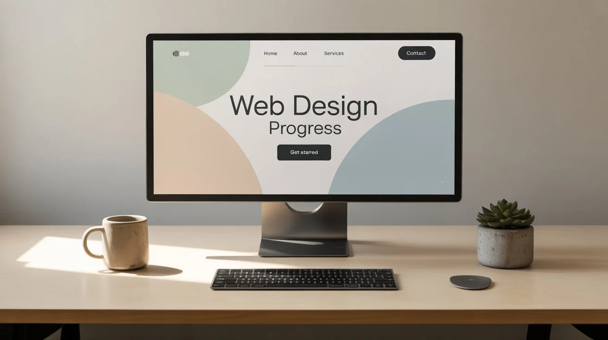

Il Design Minimalista nel 2025
15 August 2025 di Mario Rossi

Il minimalismo nel design web continua ad evolversi, adattandosi alle nuove tecnologie e alle esigenze
degli utenti. In questo articolo, esploreremo le ultime tendenze e best practice per creare interfacce pulite
ed efficaci.
Principi del Design Minimalista
Il design minimalista si basa su alcuni principi fondamentali:
- Uso dello spazio bianco
- Tipografia chiara e leggibile
- Palette colori limitata
- Focus sul contenuto
Implementazione Pratica
Per implementare questi principi nei tuoi progetti, considera i seguenti aspetti...